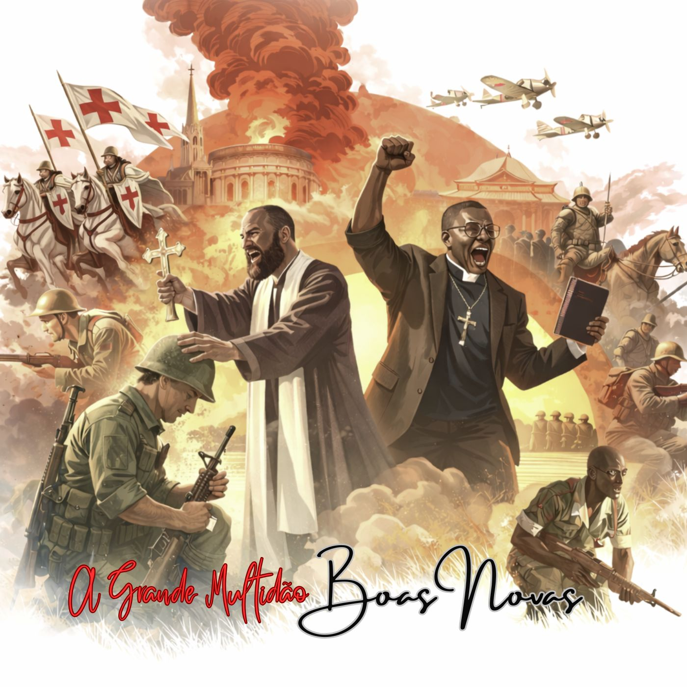
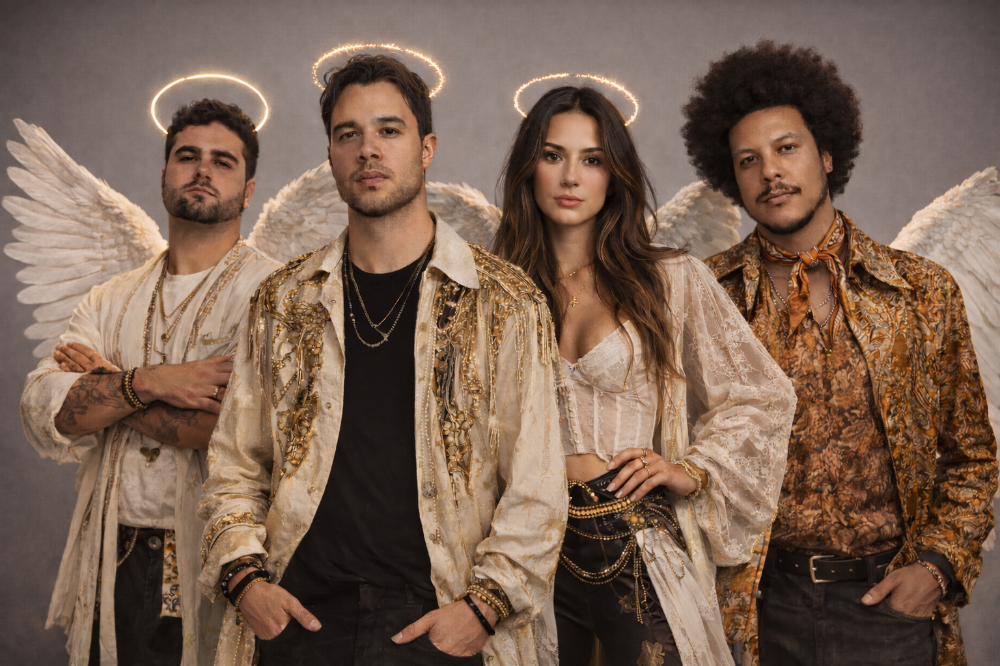

As Boas Novas
12 faixas
Rock Alternativo • Brasil
Um projeto artístico e conceitual que une música, narrativa espiritual e estética simbólica inspirada em temas bíblicos. O objetivo é transmitir mensagens de esperança, justiça e redenção baseadas em profecias e textos das Escrituras.

A inspiração central vem da expressão “grande multidão”, descrita na Bíblia como pessoas de todas as nações que sobrevivem a um período de grande tribulação e passam a viver em paz. O projeto explora musicalmente temas como:
Ultimos trabalhos realizados

12 faixas
Ouça as músicas mais recentes e explore seus álbuns.